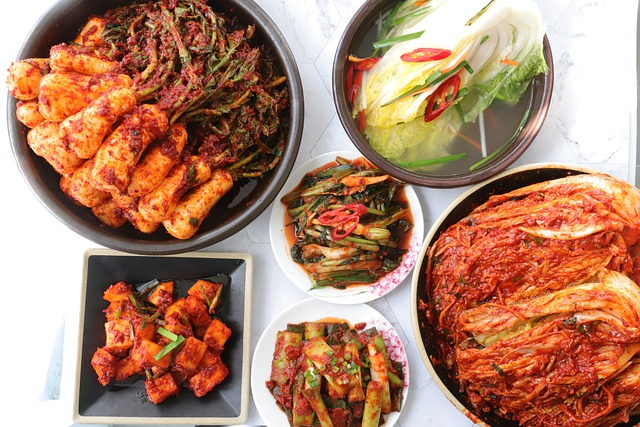

<div class="restaurant-container">
  <fm-deliver-to></fm-deliver-to>
  <div class="span3 fm-panel-filters">
    <form>
      <div class="filters"> 
        <div class="full-filters">
          <div class="dollar-stars">
              <div class="ratings">
                <h5>Rating</h5>
                <fm-rating ng-model="$parent.filter.rating"></fm-rating>
              </div>
              <div class="ratings">
                <h5>Price</h5>
                <fm-rating ng-model="$parent.filter.price" symbol="💸"></fm-rating>
              </div>
          </div>
          <div class="restaurant-head">
            <h4>
              <ng-pluralize count="restaurants.length"
                            when="{'0'    : 'No restaurants found. :-(',
                                   'one'  : '1 restaurant found!',
                                   'other': '{} restaurants found!'}">
              </ng-pluralize>
            </h4>
            <a href ng-click="sortBy('name')">Name {{sortIconFor('name')}}</a>
            <a href ng-click="sortBy('price')">Price {{sortIconFor('price')}}</a>
            <a href ng-click="sortBy('rating')">Rating {{sortIconFor('rating')}}</a>
          </div>
        </div>
        <div>
          <a  href="/#/menu/tomate" class="pop" id="one">
            <div  class="pop">
              <span>Las Empanadas de Rita</span>
            
            

            </div>
            
          </a> 
          <a  href="/#/menu/tomate" class="pop" id="two"> 
            <div class="pop">
              <span>Tomate Taqueria</span>
              
              
            </div>

         </a> 
          <a  href="/#/menu/tomate" class="pop" id="three">
            <div class="pop">
              <span>Cafeteria Literaria</span>
              
              
            </div>
          </a>
          <a  href="/#/menu/tomate" class="pop" id="four">
            <div class="pop">
              <span>Esther's German Saloon</span>
              
              
            </div>
          </a>
          <a  href="/#/menu/tomate" class="pop" id="five">
            <div class="pop">
              <span>Khartoum Khartoum</span>
              
              
            </div>            
          </a>        
        </div>
      </div>
      <div fm-checkbox-list ng-model="filter.cuisine" class="checks">
        <label ng-repeat="(name, title) in CUISINE_OPTIONS" class="checkbox">
          <input type="checkbox" value="{{name}}"> {{title.emoji}} {{title.name}}
        </label>
      </div>
    </form>
  </div>
  <div class="row-fluid">
    <div class="cards-container">
      <div ng-repeat="restaurant in restaurants" class="card">
        <a href="#/menu/{{restaurant.id}}">
          
        <p class="text-hover">{{restaurant.description}}</p>

        </a>
        <div class="description-container">
          <div>
            <fm-rating ng-model="$parent.restaurant.price" symbol="💵" readonly="true"></fm-rating>
            <fm-rating ng-model="$parent.restaurant.rating" readonly="true"></fm-rating>
          </div>
          <b>{{restaurant.name}}</b>
        </div>
      </div>
    </div>
  </div>
</div>

